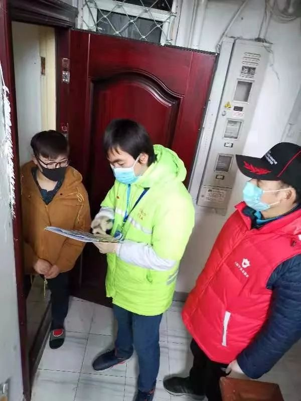
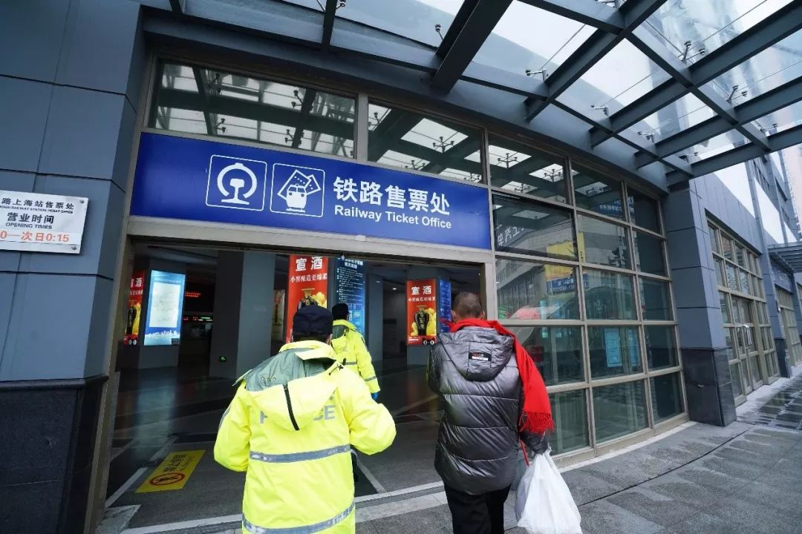

火了一年的物业公司，到时候检验真正实力了
原文链接 备份链接 记者：傅林林 “ 小区物业管理受到最严峻考验。 ” 2020年的春节因为疫情而显得格外特殊，足不出户和口罩成了标配，抖音里到处都是在家里旅游的段子。但对于各个社区来说，物业从业者却要比任何时候都繁忙。 随着疫情的扩散， …

在小区门口、在居委会、在火车站出口……这些机关干部的身影活跃在在各处。
记者 | 应 琛
“您好，请出示一下出入证。再来测量一下体温，谢谢”，“您是到这里看望父亲的对吗？请到这边填一下登记表，再测量一下体温”……这些天，在长宁区虹梅花苑小区门口，总能见到一名身穿红色马甲的志愿者。除了在小区“站岗守门”，这名志愿者还会跟着居委会干部到辖区内居民区家里走访排查。当小区居民见到陌生的脸孔问起是谁时，居委会干部都会亲切地介绍，“这是新来的志愿者王老师”。

居委会工作人员和志愿者上门排查 受访者供图
当前，上海的疫情防控面临着人员返沪、企业复工的双重考验。为缓解基层人手紧缺，连日来，上海各级机关干部重心下移、力量下沉，走出办公室，走进街道居委、火车站等交通枢纽，共同筑牢外防输入、内防扩散的基层防线。
我们是来支援，不是来添麻烦的
“他早上8点半不到就到居委会了，没有双休日，天天跟着我们跑小区，跑楼，跑居民家，还会上门做隔离流调，只要哪里缺人，总说‘我来我来’。今天上午，他还跟着我们居委会的人一起去了一处外来人口集聚地核查。我们接到消息，那里回来一个湖北人，但自称只是去嘉善探亲，没有回过湖北。”对于这位志愿者“王老师”，长宁区程家桥街道南龚居委书记张桦显得十分满意，“他是一个局长，但一点架子都没有”。
“在这里，我就是一个志愿者，一切还要听我们张书记安排。”虽然嘴上说着“不是局长”，但这位志愿者“王老师”其实正是长宁区体育局局长王仁伟。
1月31日，长宁区委书记王为人在区新冠肺炎疫情防控工作领导小组会议上强调，当前，任务最重的是各街镇和基层一线。区机关各个部门都要抽调领导干部和工作人员充实到街镇一线支援作战，切实减轻基层负担，形成更大合力。

长宁区各级机关干部充实到街镇一线支援作战 受访者供图
2月3日，10支由区各级机关干部组成的志愿者队伍分别下沉至区内10个街道。由长宁区绿化市容局、体育局、政协办、建管委、国资委、团区委和市场监管局组成的12人志愿队伍进入程家桥街道开展工作，王仁伟任领队。
在街道，志愿者们走访了程家桥的8个居民区，深入了解实际困难后，有的直接就前往居民区开展工作。而留在街道的志愿者们连续3天对程家桥辖区内112家沿街商铺进行核查和上门告知，并发放疫情防控告知书，开展来返沪人员扫码信息登记工作。对未开业商铺，志愿者们通过电话向企业传达防疫工作，要求他们登记好来返沪人员信息。

走访外地返沪人员 受访者供图
随着工作重心的调整，2月8日，“王老师”和区绿化市容局的志愿者周红武一早便出现在了南龚居委会。而张桦也“毫不客气”，将沉甸甸的一袋子卡片递到二人手中，并交待了“第一个任务”——制作小区出入证。
虽然心里没底，但又想在一天内完成任务，让居民尽早持证出入，王仁伟想出了“快速盖章工作法”，上午集中填写出入证内容，下午则将人分为两组流水线操作，一组将出入证铺开，另一组负责盖章。八小时之后，他与周红武，还有南龚居委干部就完成了10个住宅小区5400张出入证的制作。
“王老师的手都磨出水泡来了。”张桦说，通过这件事，她可以放心地给志愿者派任务了，因为他们到基层是真正做事的。

志愿者制作小区出入证 受访者供图
事实上，“王老师”只是长宁区各级机关干部下沉一线志愿者的一个缩影。记者从长宁区了解到，目前长宁区已经抽调共291名机关干部到一线支援，以应对接下去更大的返沪潮。
通过两周的基层工作，身处各个街道的志愿者深感基层一线防控工作的繁琐与压力。眼下，对于返沪人员的管理是居委会工作中最难的，因为每天都是动态的，“尽管进来时都要进行健康登记，但居委会之后还要上门核实，挨家挨户地摸清情况。不能全凭他们自己说，还要让返沪居民给我们看车票等相关信息”。
所谓“一线守门人”，大抵就是要如此细致。
把这里当作家门来守，上海安全了，你的家也就安全了
降温加上阵雨，2月15日，上海的天气有些阴冷。
13时左右，上海火车站西南出口，临时搭建的检查通道内来了一名身着银灰色羽绒服，戴着黑色口罩和红色围巾，脚穿棉拖鞋的男子。
静安区城管执法局的志愿者孙伟国在指导该男子填写健康状况信息登记表时，发现其虽然按要求完整填写信息登记表，但在填写时，他手捂口鼻、神情恍惚。在另一名该局志愿者董春华对他进一步核查身份信息时，发现该男子未携带身份证原件，而临时身份证上字迹已经模糊，通过少数可辨认的身份证号码与信息登记表上填写的号码进行比对后存在出入。

志愿者发现可疑旅客 沈琳 | 摄
于是，对其填写信息的真实性产生怀疑的志愿者叫来了现场负责人邓铭一。“现在处于特殊时期，我们是不能放你出站的，请你配合待在原地。”稳住了该男子后，邓铭一随即联系了当班民警。
在对其个人信息、来沪目的、居住地址进行核查的过程中，该男子语焉不详，三缄其口。在判定其为“双无”（在上海无工作、无居住地）人员后，民警和志愿者对他进行劝返，并陪同他购买了返程的车票，直到送其上车。

对“双无”来沪人员进行劝返 沈琳| 摄
上海站铁路管委会办公室常务副主任黄翔在接受采访时表示，2月1日起，根据上海市新型冠状病毒感染的肺炎疫情防控工作领导小组要求，从上海高速道口、机场、火车站入境上海的所有旅客，都要先在“健康云”APP上填写来沪人员健康登记表，“火车站之前是没有这块工作的，像你看到的这个篷是我们临时搭建的，队伍也是临时组建的，就连整个登记的流程也是边做边摸索”。
所幸的是，上海火车站来了一批又一批的支援力量。2月4日，静安区便抽调了近百名各级机关干部增援这里。
静安区体育局党组副书记邓铭一成了西南出口的大组长。他告诉《新民周刊》，来到这后，他与来自区各个委办局的志愿者们分成了4个班组，每班次6小时，全天24小时负责核实旅客入沪信息登记，筛查重点地区来沪人员。

志愿者指导旅客填写健康状况信息登记表 沈琳｜摄
每天志愿者们都必须穿戴一次性连体防护服，戴口罩和手套，尤其是指导旅客填表等会与旅客有近距离交流的岗位。
“旅客扫码填表提交后，会收到相应短信，告知你是A类还是B类。B类人员，只需在出口出示手机的相关信息就可以直接出站。A类人员，要经过工作人员登录系统进行核验，查看旅客的身份证和车票，并询问近14天的行程后，未到过疫情重点地区的放行，到过重点地区的根据是否有固定住所分居家隔离和集中隔离两种情况来处理。”上岗的第一天，邓铭一就遇到了一个难题。一辆由重庆经停武汉来的列车，车上所有乘客都被判定为A类。“我们发现情况很严重，当时所有的乘客都在信息登记区域滞留，等待信息的一一确认。”邓铭一当即联系了站管办了解情况，“尽管它途经武汉，但列车不开门，也不上客，所以我们只要核对旅客填的身份证和车票等基本信息没问题就可以放行了。不然光凭申报信息，我们也没有把握。”
后来，健康云后台针对这一情况做出了软件更新——根据铁路运营情况，把经停湖北的选项去掉了，这样就不会出现“假A”的情况，未经过疫情重点地区的就显示为B。
类似的情况，还有针对来沪转机的外国人。在这里支援的这些日子，志愿者们每天都会将发现的问题，及时反馈，从而完善实际工作的操作流程。

志愿者逐一核对旅客填写的信息 沈琳｜摄
近来，随着春运延续，“双无”来沪人员逐渐增加。志愿者们在指导、核查信息登记的同时，也练就了一副火眼金睛，严把入沪闸门，“我经常对他们说，要像守自己家门那样，来守住出口。这里守住了，上海才安全了，你的小家也就安全了”。
“他们的到来很大程度上解决了我们人手不足的问题。”黄翔表示，志愿者们工作都非常认真。

来自静安区文明办的志愿者手持喇叭提醒旅客扫码登记 沈琳｜摄
记者从静安区委组织部了解到，1月27日开始，他们便抽调城管、市场局等执法部门人员增援一线公共场所检查，2月2日又组织机关干部增援街镇一线，2月4日再次抽调96名干部增援上海火车站。截至目前，静安区已从区级机关抽调300多名机关干部下沉一线。
RECOMMEND
上海各区都在行动
事实上，不仅仅是上述两个区。在上海各区，目前一批来自区级机关、事业单位以及各街镇的党员干部，已经来到了社区一线，来到群众最需要的地方。他们在深入了解、理解社区的同时，也用自己的专业技能和敬业精神为社区贡献力量。
记者从杨浦区了解到，为确保基层一线防控力量，根据区委要求，区委组织部通过各级党组织广泛宣传发动，从全区范围内统一抽调机关企事业党员、干部，积极做好人员梯度储备、调配，根据一线需求情况，及时安排党员干部下沉支援社区防控工作，充实基层一线防控力量。全区共精准选调了171名政治意识强、身体素质好、春节期间未离沪或居家观察期满的党员、干部，参与人员排摸、值班巡查、口罩登记、集中观察点值守等一线防控工作，截至2月6日，大部分已经充实到社区一线防控岗位，用行动筑牢疫情“防护墙”。
同时，为应对返程抵沪高峰，区委组织部在全区机关企事业单位中再发动、再号召，将外出返沪居家观察期满的党员、干部补充进来，充实后备力量，目前已储备100余名，随时待命，支援一线。区区级机关工作党委、团区委也积极组建党员志愿者、青年志愿者团队，目前已招募800余名，根据疫情发展情况，分批次下沉到社区开展工作，确保一线防控工作有力有序。

闵行区区级工作人员下沉社区共抗疫情 图｜今日闵行公众号
而在闵行区，为进一步加强区级力量统筹，缓解社区一线疲劳运转困境和持续作战压力，闵行区下沉区级机关、企事业单位人员组团支援社区疫情防控工作，62个单位派出1673名工作人员下沉407个定点支援居委，涉及701个小区，做实做细分片包干，因地制宜、因情施策、精准施策，使每个社区都成为疫情防控的坚强堡垒。
在虹口区，机关事业单位的595名干部组成疫情防控干部突击队，投身全区206个居民区开展社区疫情防控全覆盖工作及居委相关工作。他们在社区蹲点防控疫情，协助社区原有力量，筑牢社区疫情防控的铜墙铁壁，打好这场防控保卫战。

虹口区595名干部组成的疫情防控干部突击队
为做到进沪人员健康信息登记的全覆盖，徐汇区第一时间组织区建管委、区体育局、区绿化市容局、区城管执法局、民防办、南站管委办等单位的机关干部志愿对上海铁路南站进行了24小时不间断的三班制防疫支援，确保守住疫情输入第一关。
在小区门口、在居委会、在火车站出口……这些机关干部的身影活跃在各处。

征集令
《新民周刊》现面向全国征集新冠肺炎采访对象和真实故事：
如果你是参与抗击新冠肺炎疫情的医护人员或其家属，我们希望聆听你的“战疫”故事，也希望传达你的诉求。
如果你是确诊、疑似患者本人或家属，我们希望了解你和家人如何“抗疫”的过程，让外界了解你的真实经历。
如果你是疫情严重地区的普通市民，我们希望展现你的乐观，并倾听你所需的帮助。
如果你是公共服务人员或各类捐助者，我们希望看到你的“最美逆行”，记录下你的无私。
……
抗击新冠肺炎疫情，我们诚征对疫情了解的社会各界人士，提供相关线索，说出你的故事，让我们用新闻留存这一切。
《新民周刊》新冠肺炎线索征集值班编辑联系方式（添加时请简要自我介绍）：
周一：应 琛 微信号：paulineying0127
周二：金 姬 微信号：gepetta
周三：黄 祺 微信号：shewen-2020
周四：周 洁 微信号：asyouasyou
周五：孔冰欣 微信号：kbx875055141
周六：吴 雪 微信号：shyshine1105
周日：姜浩峰 微信号：jianggeladandong
✳如你需要捐赠物资，可与以下两位工作人员联系:王勇：WangYong-SH 吴轶君：rommy150708（添加时请注明“捐物资”，方便工作人员快速通过您的申请，谢谢。）
新闻是历史的底稿，你们是历史的见证者。期待你的故事、你的线索！

▼
大家还都在看这些
▼
转载请在评论区留言，获得授权！
转载时，须注明作者、出处和微信号


原文链接 备份链接 记者：傅林林 “ 小区物业管理受到最严峻考验。 ” 2020年的春节因为疫情而显得格外特殊，足不出户和口罩成了标配，抖音里到处都是在家里旅游的段子。但对于各个社区来说，物业从业者却要比任何时候都繁忙。 随着疫情的扩散， …
原文链接 备份链接 【财新网】（记者 黄蕙昭 综合）“应收尽收、不漏一人”的强硬指令下，防控压力层层下压，社区作为抗疫“第二战场”承重更甚。艰苦卓绝的武汉保卫战中，基层社区暴露出诸多问题，折射防控指令之阻滞，上下衔接之龃龉，应急资源之困 …
原文链接 备份链接 经济观察报 记者 叶心冉 上海报道 2月12日，苏州工业园区经济发展委员会公布数据称，辖区目前“三必需一重要”（涉及保障公共事业运行必需、疫情防控必需、群众生活必需及其他涉及重要国计民生的相关领域）企业100%开工，规 …
原文链接 备份链接 *************▲*************2020年2月9日，武汉市江岸区永清街道某社区，社区工作人员给困难居民送菜上门。（新华社/图） 全文共4294字，阅读大约需要10分钟。 安吉拉觉得自己仿佛活成 …
原文链接 备份链接 *************▲*************北京地坛医院是北京市新冠肺炎定点治疗医院，2020年2月3日，一名护士走过张贴着护士生活照的走廊。 （新华社/图） 全文共2934字，阅读大约需要7分钟。 于 …